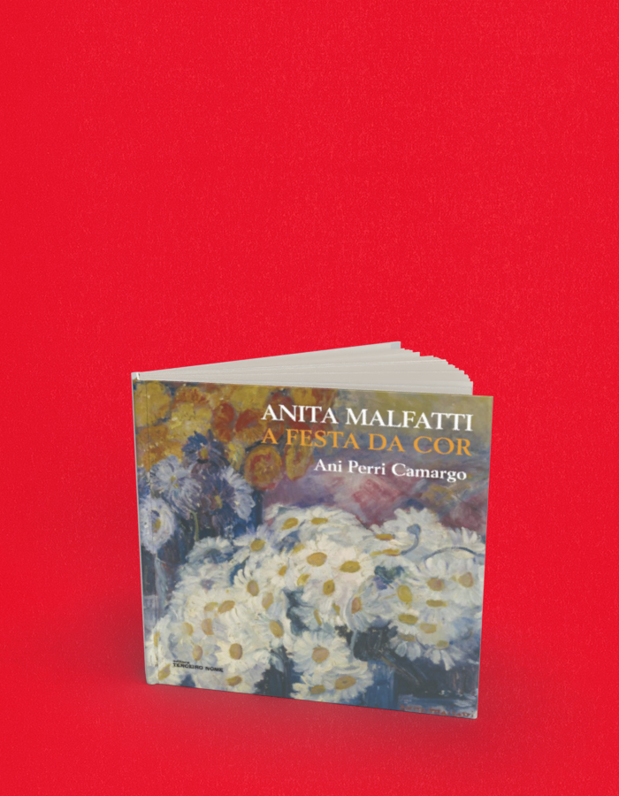

A Festa da cor Anita Malfatti
A compra acontece no site da livraria, em uma nova aba. Consulte lá os preços e a disponibilidade. Procure pelo título ou ISBN deste livro.
- Autoria / créditos
- Ani Perri Camargo
- ISBN
- 9788578160388
- Páginas
- 184
- Formato
- 21 x 21 cm
- Acabamento
- brochura
Sobre o livro
A ousadia das primeiras obras de Anita Malfatti arregimentou seguidores, como Mario de Andrade, Guilherme de Almeida e Victor Brecheret, e provocou críticas frozes, como as de Monteiro Lobato. No núcleo familiar, a obra de Anita também provocou fortes reações: a reprovação do tio que financiara seus estudos no exterior e a decepção geral causada pela diferença que havia entre o que se via em suas telas, como O homem amarelo e A boba, e o que se admirava nos clássicos que ocupavam as paredes das casas da família. Tudo isto está presente neste perfil biográfico, tornando-nos espectadores da efervescência cultural da Alemanha e dos Estados Unidos das primeiras décadas do século XX e do choque causado pela Semana de Arte de Moderna de São Paulo, em 1922. O modo de lidar com a deficiência física, os mistérios da vida amorosa e a especulada paixão de Anita por Mário de Andrade, temas fundamentais de sua biografia, também estão aqui presentes, iluminando seu retrato para a história da arte brasileira.
← Voltar ao catálogo